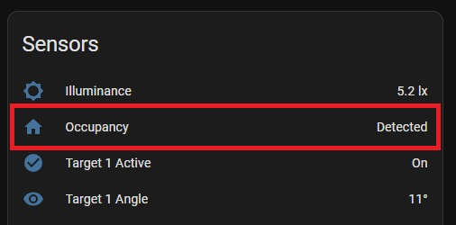
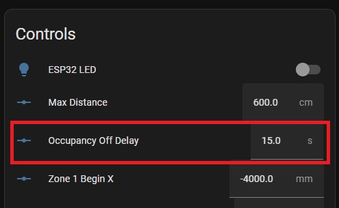
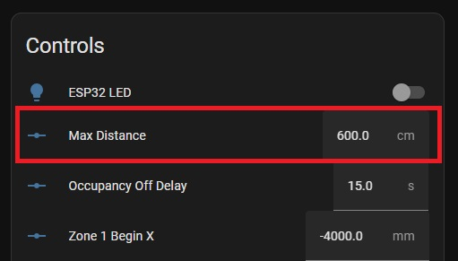
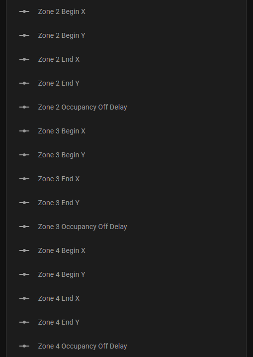

Home Assistant Entities Explained
What are all of these entities!?
Home Assistant Entities
This page is not up to date yet and still contains screenshots from the Everything Presence One, rather than the Lite - working on updating it very soon!
After adding the Lite to Home Assistant, you may wonder which sensors you can use and what they do.
To view all of the sensors and entities, click on the device from the ESPHome menu:

This will show you a dashboard of all of the sensors and controls inside of Home Assistant that you can use in your Automations:

Illuminance
Illuminance is measured from the on-board light sensor in lux. There are slots at the top of the Lite case that allow for light to pass-through and be measured, so make sure not to obstruct these for the best readings.

Illuminance supports a configurable offset using the UI which allows you to offset the reported value on the fly to calibrate each of these sensors for your environment. You can do that with these highlighted controls under the configuration section:

mmWave
You will find a sensor called mmWave - this is the output from the mmWave sensor directly and indicates if movement is detected. The mmWave sensor has a configurable offset for the “Blind time” which we will cover below. The default blind time is 15 seconds, which is basically how long the sensor takes to go to an “Off” or “clear” state after motion has stopped being detected:

Offsets for mmWave
The mmWave sensor has an adjustable timeout period inside of Home Assistant using the mmWave Off Latency control. The value is measured in seconds and the default is for 15 seconds. I generally wouldn’t recommend setting this below 10s to help with false clearing.

Distance
The mmWave sensor has a configurable distance control inside of Home Assistant.
Distance allows you to adjust the max range of the sensor, up to a maximum of 6m. Please note that 6m is the max range, but doesn’t nessecarily mean the sensor is capable of detecting the tiniest of movements at 6m - placement is still important for the best results - see the tuning guide for more information:

If you would like to enable zones 2, 3 and 4, simply click on the entities not shown message:

To reveal entities that are disabled by default:

Click the entity you want to enable, then click the settings icon in the right hand corner of the popup. Then enable the entity:
Wait 30 seconds, refresh the page and the entity is now enabled. Repeat this for each entity you want to enable (start and end zone for example).
To setup distance zones, set a start and an end distance for each zone you want to monitor. If you do not want to use one of the zones, leave both the start and the end point set to zero. This is important!
This is very much in beta, so some rules to keep in mind:
- Zones cannot overlap each other
- The distance of a zone must be a greater distance than the previous zone. I.e, Zone 2 must not have a lower start and end distance than Zone 1.
- If you don’t want to use one or multiple zones, leave the start and end distance set to 0 and it will not be included.
- If you want to replicate the previous functionality, i.e you want the sensor to measure everything from 0cm to 510cm, set zone 1 start to 0cm and the end to 510cm. Then set zone 2, zone 3 and zone 4 start and end point to 0.
You MUST then hit the “set distance” button in the UI for these zones to take effect. Previously, the updated value for distance would be set to the sensor immediately as soon as you changed the slider. This is no longer the case and the set distance button must be used before new values will be sent to the sensor. This is because updating the sliders immediately could cause the sensor to get confused if the user hasn’t quite finished setting up the zones yet.
If you make a mistake configuring the zones, the sensor won’t accept the value and nothing will change, but the UI sliders will indicate it has, making it difficult to know. This is a beta/advanced feature so I do want to improve the feedback from the sensor for this to make it more obvious if something didn’t work, but there is a text sensor that will update to show you if the zones were sent correctly or not:
The numbers in the error message are “segments” of the distance set above. The first number is zone 1 start, second number is zone 1 end, third number is zone 2 start, fourth is zone 2 end and so on. These numbers can be multiplied by 15 to get the value in cm, corresponding to what you set in the sliders. Confusing/complicated I know, working on it.
Turning off LEDs
The Lite has an LED on the PCB that can be controlled: